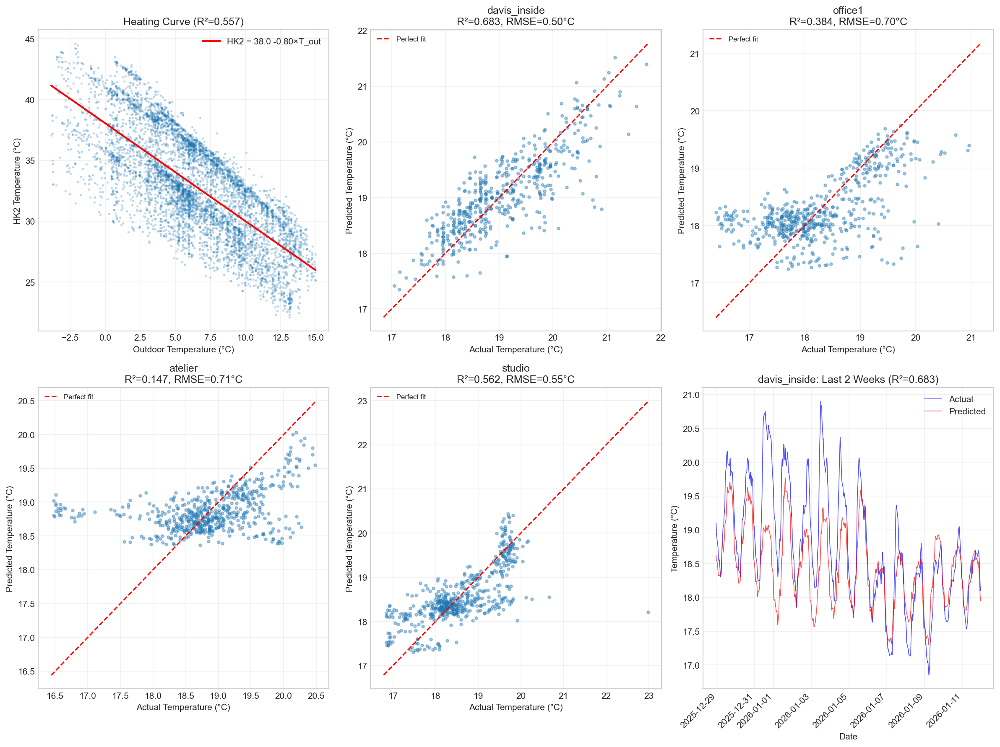
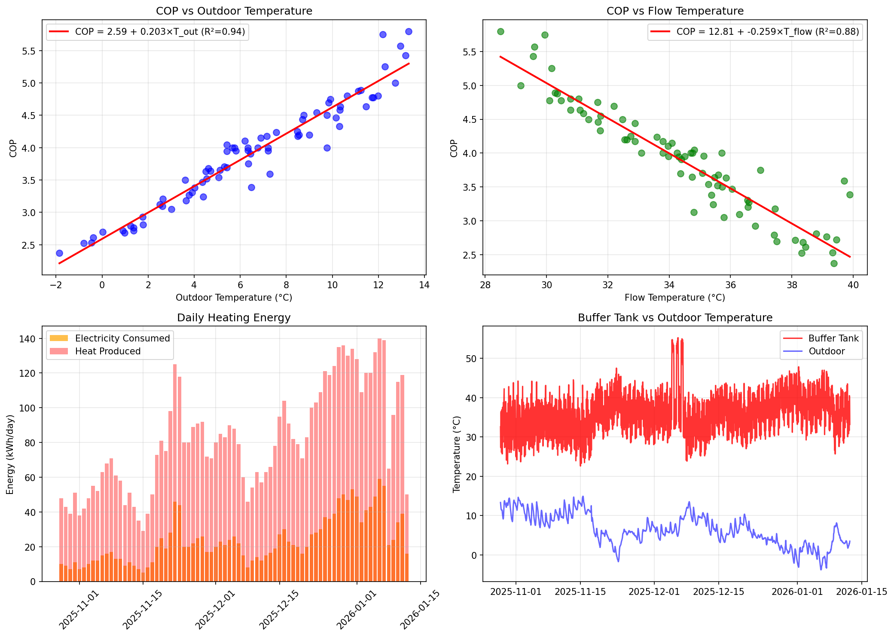
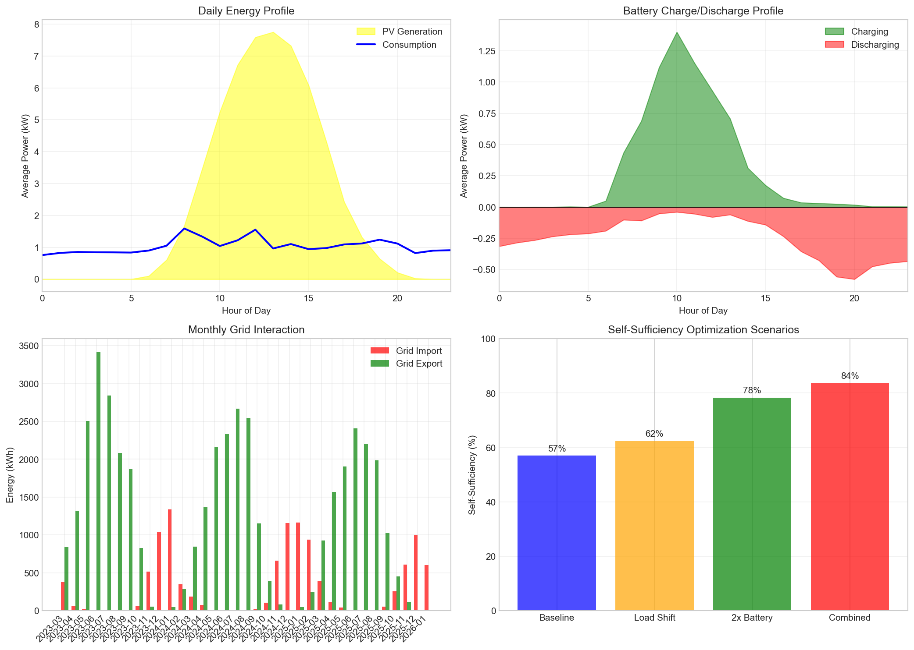

This is the model used in Phase 4 optimization. It accounts for controllable
parameters (setpoint, curve_rise) that affect T_flow → COP → energy consumption.
Simple Reference Model (diagnostic only)
HK2 = 38.0 -0.805 × T_outdoor (R² = 0.557)
This simplified model ignores controllable parameters and is used only for computing
"heating effort" as a diagnostic signal for thermal response analysis.
τ_effort: 4-48h - rooms respond faster to heating changes
τ_pv: ~24h for all rooms - consistent solar response time
Weighted Average Model Performance
Overall weighted R² = 0.683
Implications for Optimization
Pre-heating timing: With τ_effort of 4-48h, rooms need advance notice
to reach target temperature
Solar preheating: All rooms (except atelier) benefit from solar gain.
Schedule comfort periods during/after sunny periods.
Room variation: Different rooms respond differently to heating.
simlab and studio respond strongly; atelier responds weakly.

Figure 17: Thermal model: heating curve (left),
actual vs predicted scatter (middle), time series validation (right).
3.2 Heat Pump Model
COP Analysis
Metric
Value
Notes
Mean COP
3.91
Good efficiency for air-source heat pump
COP Range
2.37 – 5.80
Varies with outdoor/flow temperature
COP sensitivity to outdoor temp
0.2034 COP/°C
Increases with warmer outdoor
COP sensitivity to flow temp
-0.2592 COP/°C
Decreases with higher flow temp
COP Model
Multi-variable regression model:
COP = 6.14 + 0.1405×T_out + -0.0915×T_flow
R² = 0.956, RMSE = 0.169
Capacity Analysis
Metric
Mean
Max
Min
Daily electricity consumed
23.5 kWh
59.0 kWh
5.0 kWh
Daily heat produced
82.0 kWh
140.0 kWh
29.0 kWh
Compressor runtime
2.1 h/day
2.8 h/day
—
Buffer Tank Dynamics
Metric
Value
Mean temperature
36.0°C
Temperature range
22.3 – 55.5°C
Temperature variability (std)
5.95°C
Implications for Optimization
COP optimization: Lower flow temperatures improve COP.
With slope -0.2592, reducing flow by 5°C improves COP by ~1.30.
Timing strategy: Run heat pump during warmest outdoor temps (daytime/solar hours)
for better COP. Each +1°C outdoor improves COP by ~0.203.
Capacity headroom: Max observed 59 kWh/day
suggests capacity is sufficient for current heating demand.
Buffer utilization: Buffer tank (mean 36°C)
provides thermal storage for load shifting.

Figure 18: Heat pump analysis: COP vs outdoor temperature (top-left),
COP vs flow temperature (top-right), daily energy (bottom-left),
buffer tank dynamics (bottom-right).
3.3 Energy System Model
PV Generation Patterns
Metric
Value
Mean daily generation
55.7 kWh
Peak daily generation
145.7 kWh
Peak generation hours
10:00 - 16:00
Battery Performance
Metric
Value
Notes
Round-trip efficiency
83.7%
Within normal range
Mean daily discharge
6.3 kWh
Energy supplied to home from battery
Grid Interaction
Metric
Value
Mean daily import
10.6 kWh
Mean daily export
40.5 kWh
Net export
29.9 kWh/day
Current self-sufficiency
75.3%
Self-Sufficiency Optimization Scenarios
Scenario
Self-Sufficiency
Improvement
Description
Baseline (current)
57.0%
—
Current system operation
Load Shifting
62.4%
+5.4pp
Shift 20% of evening load to solar hours
2× Battery Capacity
78.3%
+21.3pp
Double battery storage capacity
Combined
83.7%
+26.7pp
Load shifting + larger battery
Recommendations
Heating timing: Schedule comfort mode start during solar hours
(10:00 onwards) to maximize direct PV consumption.
Buffer tank pre-heating: Charge buffer tank during peak PV
(13:00-16:00)
to store thermal energy for evening.
Battery considerations: Current efficiency (84%) is
acceptable.
Account for this in optimization.
Grid export value: Net exporter (30 kWh/day).
Tariff optimization could improve financial return on exports.

Figure 19: Energy system analysis: daily profile (top-left),
battery patterns (top-right), monthly grid balance (bottom-left),
self-sufficiency scenarios (bottom-right).
3.4 Tariff Cost Model
Historical Cost Analysis
Metric
Daily Average
Annual Projection
Grid purchase cost
CHF 3.27
CHF 1,194
Feed-in revenue
CHF 5.95
CHF 2,173
Net cost
CHF -2.68
CHF -979
High vs Low Tariff Breakdown
Tariff Period
Grid Import (kWh)
Cost (CHF)
Share
High Tariff (HT)
4,747.6
1,669.59
48.7%
Low Tariff (NT)
6,394.3
1,761.93
51.3%
Insight: 49% of grid costs occur during high-tariff
periods. Shifting consumption to low-tariff hours (21:00-06:00 weekdays, weekends) can reduce costs.
Seasonal Patterns
Season
Daily Net Cost
Notes
Winter (Oct-Mar)
CHF 2.40
Higher heating demand, less PV
Summer (Apr-Sep)
CHF -5.84
Higher PV, often net producer
Cost Forecast Model
Model
R²
RMSE
Key Coefficient
Seasonal model
0.708
CHF 5.38
Weekend: CHF -0.10
HDD model
0.694
CHF 2.92
HDD: CHF 1.00/HDD
Cost Optimization Scenarios
Scenario
Net Cost
Annual
Savings
Reduction
Baseline (current)
CHF -2,813.68
CHF -979
—
—
Shift 20% to low tariff
CHF -2,889.57
CHF -1,005
CHF 26/yr
2.7%
Shift 30% to low tariff
CHF -2,927.52
CHF -1,019
CHF 40/yr
4.0%
Combined (load + battery)
CHF -2,921.83
CHF -1,017
CHF 38/yr
3.8%
Recommendations
Load shifting: Schedule heating comfort mode to start during solar hours
and extend into low-tariff evening periods.
High-tariff avoidance: Reduce grid import during 06:00-21:00 weekdays
by pre-heating with PV or using stored heat/battery.
Potential savings: 4% reduction (~CHF 38/year)
achievable through combined load shifting and battery optimization.
Rate differential: High-low tariff spread of ~8.0 Rp/kWh
provides economic incentive for time-shifting.
Data Limitations: Sensor data covers only 64 days of overlap with energy data.
Seasonal coverage is limited to autumn/early winter. Models should be validated with
additional data as it becomes available.
Key Equations
Thermal Model
Time constant: τ = C/UA ≈ 54-60 hours
Discrete temperature change (per 15 min):
ΔT = a × (T_flow - T_room) - b × (T_room - T_outdoor) + c × PV
Where:
a = heating coefficient (~0.005 K/15min/K)
b = loss coefficient (~0.005 K/15min/K)
c = solar gain coefficient
Timing Strategy: Shift heating to solar hours (10:00-16:00) to maximize COP
(warmer outdoor temps) and direct PV consumption. Running at midday vs midnight
could improve COP by 0.5-1.0 (15-25% more efficient).
Flow Temperature: Reduce flow temps where possible to improve COP.
Each -1°C improves COP by ~0.10. Reducing curve rise by 0.1 saves ~0.8°C flow temp.
Pre-heating: With ~54h time constant, building responds slowly.
Start comfort mode 2-3 hours before needed for gradual warm-up during solar hours.
Buffer Tank: Charge during peak PV (12:00-15:00) to store thermal energy
for evening heating. Buffer can bridge 2-4 hours of heating demand.
Evening Setback: Can start eco mode 1-2 hours before bedtime.
Room temp drops only ~0.5-1°C before sleep due to high thermal mass.
Phase 4: Optimization Strategy Development
The models developed here feed into Phase 4, where we will:
Develop rule-based heuristics using the model parameters
Quantify expected energy savings from each strategy
Prepare parameter sets for the randomized intervention study (Phase 5)
For detailed model documentation, see:docs/phase3_models.md